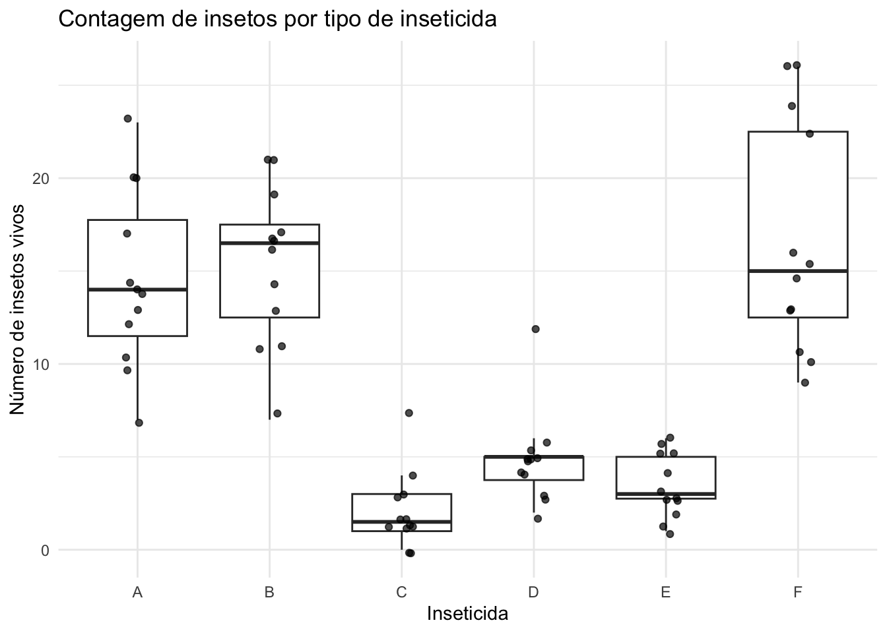
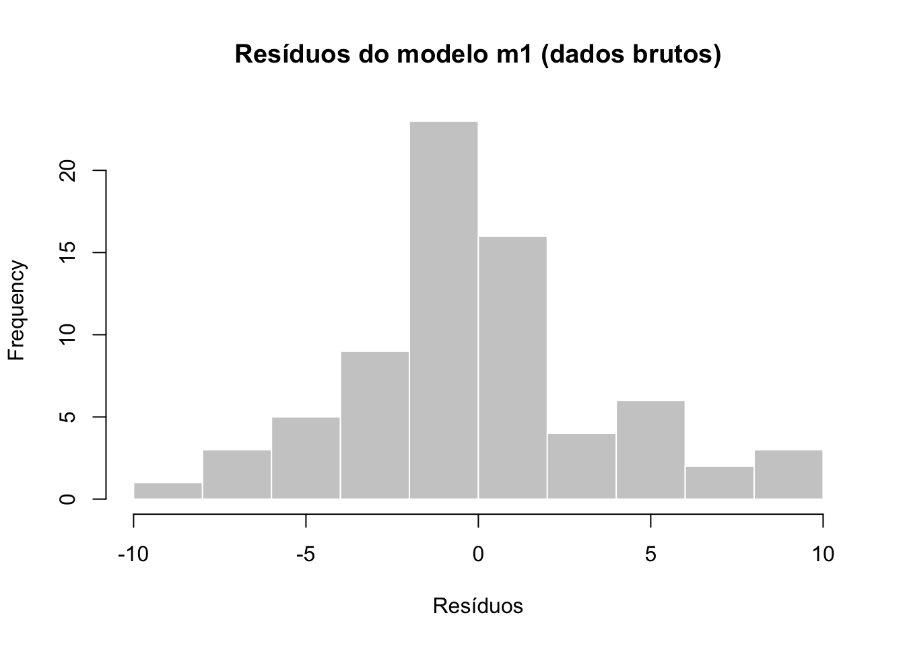
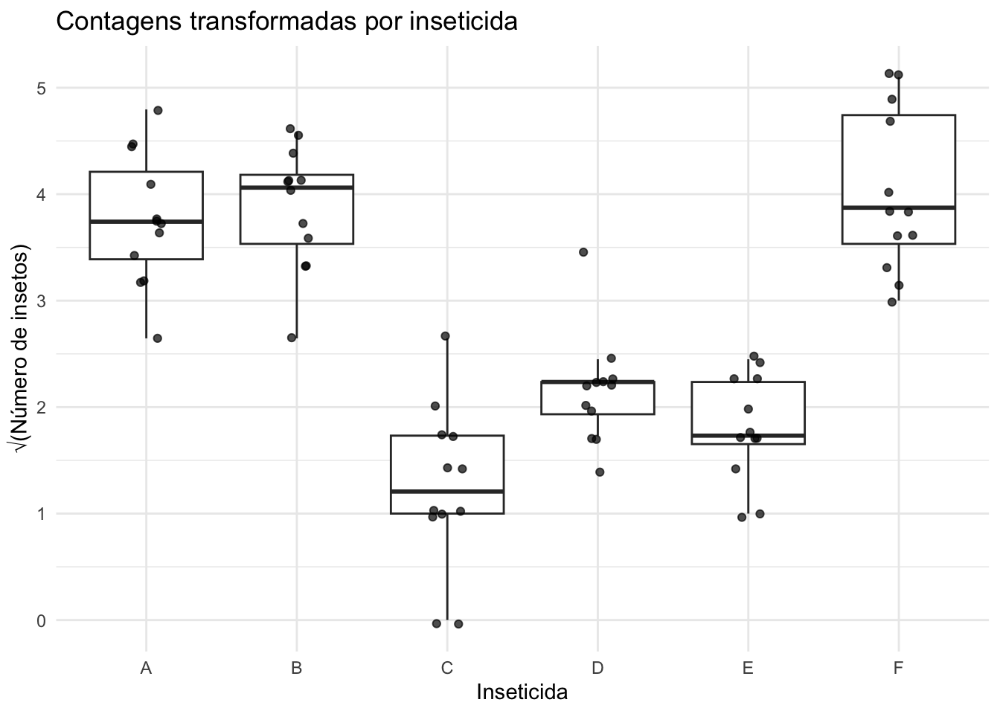
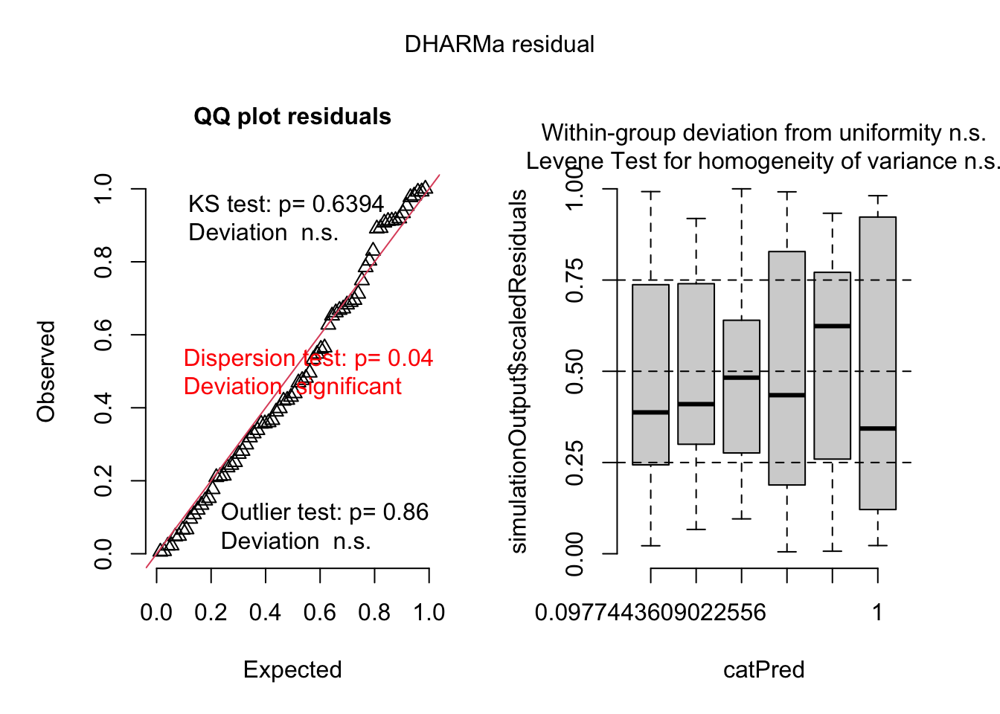

ANOVA, Transformações e Modelos Lineares Generalizados (GLM)
Author
Fitopatologia — Análise e Visualização de Dados no R
Published
April 26, 2026
1 Introdução e carregamento dos dados
1.1 Contexto estatístico: dados de contagem
Dados de contagem (número de insetos, lesões, esporos, etc.) apresentam características distintas de dados contínuos. Em geral, eles:
Assumem apenas valores inteiros não negativos (0, 1, 2, 3, …)
Tendem a seguir uma distribuição de Poisson, na qual a variância é aproximadamente igual à média
Frequentemente apresentam assimetria positiva, especialmente quando as contagens são baixas
Importante: Na ANOVA clássica, verificamos a normalidade dos resíduos do modelo, e não dos valores originais. Um histograma dos dados brutos assimétrico não invalida a ANOVA se os resíduos forem normais. Contudo, com dados de contagem, é comum que ambos violem a normalidade, exigindo alternativas.
1.2 Carregamento de pacotes e dados
O conjunto InsectSprays é um dataset clássico do R que contém contagens de insetos vivos após a aplicação de seis inseticidas diferentes (A a F), com 12 repetições por inseticida.
library(tidyverse) # manipulação e visualização de dadoslibrary(performance) # diagnóstico de modelos (normalidade, homocedasticidade)library(DHARMa) # diagnóstico de resíduos via simulação (especialmente para GLMs)library(emmeans) # médias marginais estimadas e comparações post-hoclibrary(multcomp) # letras compactas para comparações múltiplaslibrary(agricolae) # teste de Kruskal-Wallis com comparaçõesinsetos <- InsectSpraysglimpse(insetos)
Rows: 72
Columns: 2
$ count <dbl> 10, 7, 20, 14, 14, 12, 10, 23, 17, 20, 14, 13, 11, 17, 21, 11, 1…
$ spray <fct> A, A, A, A, A, A, A, A, A, A, A, A, B, B, B, B, B, B, B, B, B, B…
1.3 Visualização exploratória inicial
Antes de ajustar qualquer modelo, é fundamental visualizar os dados. O boxplot com jitter permite ver a distribuição e a variabilidade de cada grupo simultaneamente.
insetos |>ggplot(aes(spray, count)) +geom_boxplot(outlier.colour =NA) +geom_jitter(width =0.1, alpha =0.7) +labs(x ="Inseticida",y ="Número de insetos vivos",title ="Contagem de insetos por tipo de inseticida" ) +theme_minimal()

Distribuição das contagens de insetos por inseticida
O que observar: Diferenças nas medianas entre grupos sugerem efeito do inseticida. Diferenças nas amplitudes das caixas (variâncias) podem indicar heterocedasticidade — um problema para a ANOVA clássica.
2 Modelo de ANOVA clássico (dados brutos)
2.1 Ajuste do modelo linear
A ANOVA é formulada como um modelo linear:
\[y_{ij} = \mu + \tau_i + \varepsilon_{ij}\]
onde:
\(y_{ij}\) = contagem do \(j\)-ésimo inseto no \(i\)-ésimo inseticida
\(\mu\) = média geral
\(\tau_i\) = efeito do inseticida \(i\)
\(\varepsilon_{ij} \sim N(0, \sigma^2)\) = erro aleatório (pressuposto de normalidade)
m1 <-lm(count ~ spray, data = insetos)summary(m1)
Call:
lm(formula = count ~ spray, data = insetos)
Residuals:
Min 1Q Median 3Q Max
-8.333 -1.958 -0.500 1.667 9.333
Coefficients:
Estimate Std. Error t value Pr(>|t|)
(Intercept) 14.5000 1.1322 12.807 < 2e-16 ***
sprayB 0.8333 1.6011 0.520 0.604
sprayC -12.4167 1.6011 -7.755 7.27e-11 ***
sprayD -9.5833 1.6011 -5.985 9.82e-08 ***
sprayE -11.0000 1.6011 -6.870 2.75e-09 ***
sprayF 2.1667 1.6011 1.353 0.181
---
Signif. codes: 0 '***' 0.001 '**' 0.01 '*' 0.05 '.' 0.1 ' ' 1
Residual standard error: 3.922 on 66 degrees of freedom
Multiple R-squared: 0.7244, Adjusted R-squared: 0.7036
F-statistic: 34.7 on 5 and 66 DF, p-value: < 2.2e-16
anova(m1)
Analysis of Variance Table
Response: count
Df Sum Sq Mean Sq F value Pr(>F)
spray 5 2668.8 533.77 34.702 < 2.2e-16 ***
Residuals 66 1015.2 15.38
---
Signif. codes: 0 '***' 0.001 '**' 0.01 '*' 0.05 '.' 0.1 ' ' 1
Interpretação da tabela ANOVA: Um p-valor pequeno na linha spray indica que pelo menos um inseticida difere dos demais. O R² indica a proporção da variação total explicada pelo fator inseticida.
2.2 Diagnóstico de resíduos do modelo m1
2.2.1 Histograma dos resíduos
hist(m1$residuals,main ="Resíduos do modelo m1 (dados brutos)",xlab ="Resíduos",col ="gray80",border ="white")

Histograma dos resíduos do modelo linear (dados brutos)
2.2.2 Teste de Shapiro-Wilk para normalidade dos resíduos
H₀: Os resíduos seguem distribuição normal Decisão: Se p < 0,05 → rejeita H₀ → resíduos não normais → ANOVA inválida
shapiro.test(m1$residuals)
Shapiro-Wilk normality test
data: m1$residuals
W = 0.96006, p-value = 0.02226
2.2.3 Teste de Bartlett para homogeneidade de variâncias
H₀: As variâncias dos grupos são homogêneas (homocedasticidade) Decisão: Se p < 0,05 → rejeita H₀ → variâncias heterogêneas → violação da ANOVA
Nota: O teste de Bartlett é sensível à normalidade dos dados. Use-o apenas após confirmar a normalidade. Caso contrário, prefira o teste de Levene.
bartlett.test(count ~ spray, data = insetos)
Bartlett test of homogeneity of variances
data: count by spray
Bartlett's K-squared = 25.96, df = 5, p-value = 9.085e-05
2.2.4 Diagnóstico via pacote performance
O pacote performance oferece funções mais informativas e com mensagens interpretativas diretas para verificar as premissas do modelo.
check_normality(m1)
Warning: Non-normality of residuals detected (p = 0.022).
O pacote DHARMa gera resíduos quantílicos simulados, que permitem verificar graficamente se os resíduos seguem a distribuição esperada — especialmente útil para modelos não gaussianos (como Poisson). Dois gráficos são gerados:
Esquerda: Q-Q plot dos resíduos simulados (deve estar próximo da diagonal)
Direita: Resíduos vs. valores preditos (deve ser uniforme, sem padrões)
plot(simulateResiduals(m1))
Diagnóstico DHARMa para o modelo linear com dados brutos
Interpretação: Se os resíduos do modelo linear com dados brutos apresentarem desvios de normalidade ou padrões nos gráficos DHARMa, isso indica a necessidade de transformação ou uso de um GLM.
3 ANOVA com transformação raiz quadrada
3.1 Por que transformar dados de contagem?
Dados de contagem seguem aproximadamente a distribuição de Poisson, onde:
\[\text{Var}(y) \approx E(y) = \mu\]
Isso viola o pressuposto de homocedasticidade da ANOVA, pois grupos com maior média terão maior variância. A transformação raiz quadrada estabiliza a variância:
# Criar coluna transformada no dataframeinsetos2 <- insetos |>mutate(count2 =sqrt(count))# Ajustar modelo com transformação diretamente na fórmulam2 <-lm(sqrt(count) ~ spray, data = insetos)summary(m2)
Call:
lm(formula = sqrt(count) ~ spray, data = insetos)
Residuals:
Min 1Q Median 3Q Max
-1.24486 -0.39970 -0.01902 0.42661 1.40089
Coefficients:
Estimate Std. Error t value Pr(>|t|)
(Intercept) 3.7607 0.1814 20.733 < 2e-16 ***
sprayB 0.1160 0.2565 0.452 0.653
sprayC -2.5158 0.2565 -9.807 1.64e-14 ***
sprayD -1.5963 0.2565 -6.223 3.80e-08 ***
sprayE -1.9512 0.2565 -7.606 1.34e-10 ***
sprayF 0.2579 0.2565 1.006 0.318
---
Signif. codes: 0 '***' 0.001 '**' 0.01 '*' 0.05 '.' 0.1 ' ' 1
Residual standard error: 0.6283 on 66 degrees of freedom
Multiple R-squared: 0.7724, Adjusted R-squared: 0.7552
F-statistic: 44.8 on 5 and 66 DF, p-value: < 2.2e-16
anova(m2)
Analysis of Variance Table
Response: sqrt(count)
Df Sum Sq Mean Sq F value Pr(>F)
spray 5 88.438 17.6876 44.799 < 2.2e-16 ***
Residuals 66 26.058 0.3948
---
Signif. codes: 0 '***' 0.001 '**' 0.01 '*' 0.05 '.' 0.1 ' ' 1
3.3 Diagnóstico do modelo transformado
check_normality(m2)
OK: residuals appear as normally distributed (p = 0.681).
check_heteroscedasticity(m2)
OK: Error variance appears to be homoscedastic (p = 0.854).
plot(simulateResiduals(m2))
Diagnóstico DHARMa para o modelo linear com raiz quadrada
3.4 Visualização dos dados transformados
insetos2 |>ggplot(aes(spray, count2)) +geom_boxplot(outlier.colour =NA) +geom_jitter(width =0.1, alpha =0.7) +labs(x ="Inseticida",y ="√(Número de insetos)",title ="Contagens transformadas por inseticida" ) +theme_minimal()

Distribuição das contagens transformadas (√count) por inseticida
3.5 Comparações múltiplas com emmeans (modelo transformado)
O pacote emmeans calcula as médias marginais estimadas na escala transformada e, com type = "response", as reconverte para a escala original automaticamente.
medias2 <-emmeans(m2, ~ spray, type ="response")medias2
spray response SE df lower.CL upper.CL
A 14.14 1.360 66 11.550 17.00
B 15.03 1.410 66 12.352 17.97
C 1.55 0.452 66 0.779 2.58
D 4.68 0.785 66 3.248 6.38
E 3.27 0.656 66 2.095 4.72
F 16.15 1.460 66 13.370 19.19
Confidence level used: 0.95
Intervals are back-transformed from the sqrt scale
3.5.1 Letras compactas (compact letter display)
A função cld() atribui letras a cada grupo: grupos que compartilham a mesma letra não diferem significativamente entre si (p > 0,05).
cld(medias2, Letters = letters)
spray response SE df lower.CL upper.CL .group
C 1.55 0.452 66 0.779 2.58 a
E 3.27 0.656 66 2.095 4.72 ab
D 4.68 0.785 66 3.248 6.38 b
A 14.14 1.360 66 11.550 17.00 c
B 15.03 1.410 66 12.352 17.97 c
F 16.15 1.460 66 13.370 19.19 c
Confidence level used: 0.95
Intervals are back-transformed from the sqrt scale
Note: contrasts are still on the sqrt scale. Consider using
regrid() if you want contrasts of back-transformed estimates.
P value adjustment: tukey method for comparing a family of 6 estimates
significance level used: alpha = 0.05
NOTE: If two or more means share the same grouping symbol,
then we cannot show them to be different.
But we also did not show them to be the same.
4 Alternativa não paramétrica: Kruskal-Wallis
4.1 Quando usar o Kruskal-Wallis?
O teste de Kruskal-Wallis é a alternativa não paramétrica à ANOVA. É indicado quando:
Os resíduos não seguem distribuição normal
O tamanho amostral é pequeno e a transformação não normaliza os dados
Os dados são ordinais ou apresentam muitos empates
Limitação importante: O teste não paramétrico é menos poderoso que o GLM de Poisson quando os dados realmente seguem essa distribuição. Isso significa que ele tem maior chance de não detectar diferenças reais entre grupos. O GLM é sempre preferível para dados de contagem.
# Teste de Kruskal-Wallis básicokruskal.test(count ~ spray, data = insetos)
Kruskal-Wallis rank sum test
data: count by spray
Kruskal-Wallis chi-squared = 54.691, df = 5, p-value = 1.511e-10
# Teste de Kruskal com comparações múltiplas (pacote agricolae)k <-kruskal(insetos$count, insetos$spray, console =TRUE)
Study: insetos$count ~ insetos$spray
Kruskal-Wallis test's
Ties or no Ties
Critical Value: 54.69134
Degrees of freedom: 5
Pvalue Chisq : 1.510845e-10
insetos$spray, means of the ranks
insetos.count r
A 52.16667 12
B 54.83333 12
C 11.45833 12
D 25.58333 12
E 19.33333 12
F 55.62500 12
Post Hoc Analysis
t-Student: 1.996564
Alpha : 0.05
Minimum Significant Difference: 8.462804
Treatments with the same letter are not significantly different.
insetos$count groups
F 55.62500 a
B 54.83333 a
A 52.16667 a
D 25.58333 b
E 19.33333 bc
C 11.45833 c
k
$statistics
Chisq Df p.chisq t.value MSD
54.69134 5 1.510845e-10 1.996564 8.462804
$parameters
test p.ajusted name.t ntr alpha
Kruskal-Wallis none insetos$spray 6 0.05
$means
insetos.count rank std r Min Max Q25 Q50 Q75
A 14.500000 52.16667 4.719399 12 7 23 11.50 14.0 17.75
B 15.333333 54.83333 4.271115 12 7 21 12.50 16.5 17.50
C 2.083333 11.45833 1.975225 12 0 7 1.00 1.5 3.00
D 4.916667 25.58333 2.503028 12 2 12 3.75 5.0 5.00
E 3.500000 19.33333 1.732051 12 1 6 2.75 3.0 5.00
F 16.666667 55.62500 6.213378 12 9 26 12.50 15.0 22.50
$comparison
NULL
$groups
insetos$count groups
F 55.62500 a
B 54.83333 a
A 52.16667 a
D 25.58333 b
E 19.33333 bc
C 11.45833 c
attr(,"class")
[1] "group"
5 Modelo Linear Generalizado (GLM) — Poisson
5.1 Fundamentos teóricos do GLM Poisson
O GLM com família Poisson é a abordagem estatisticamente mais adequada para dados de contagem. O modelo assume:
Call:
glm(formula = count ~ spray, family = poisson(link = "log"),
data = insetos)
Coefficients:
Estimate Std. Error z value Pr(>|z|)
(Intercept) 2.67415 0.07581 35.274 < 2e-16 ***
sprayB 0.05588 0.10574 0.528 0.597
sprayC -1.94018 0.21389 -9.071 < 2e-16 ***
sprayD -1.08152 0.15065 -7.179 7.03e-13 ***
sprayE -1.42139 0.17192 -8.268 < 2e-16 ***
sprayF 0.13926 0.10367 1.343 0.179
---
Signif. codes: 0 '***' 0.001 '**' 0.01 '*' 0.05 '.' 0.1 ' ' 1
(Dispersion parameter for poisson family taken to be 1)
Null deviance: 409.041 on 71 degrees of freedom
Residual deviance: 98.329 on 66 degrees of freedom
AIC: 376.59
Number of Fisher Scoring iterations: 5
Como interpretar os coeficientes: Os \(\beta\) estão na escala logarítmica. Para interpretação na escala original: \(e^{\beta_i}\) representa a razão de médias entre o grupo \(i\) e o grupo de referência.
5.3 Diagnóstico do GLM Poisson via DHARMa
O DHARMa é especialmente recomendado para GLMs, pois os resíduos de Pearson e deviance do Poisson não seguem distribuição normal e não podem ser avaliados com Shapiro-Wilk. O DHARMa usa simulação para gerar resíduos uniformes comparáveis.
plot(simulateResiduals(m3))

Diagnóstico DHARMa para o GLM Poisson
O que verificar: - Q-Q plot deve seguir a diagonal (uniformidade dos resíduos) - Gráfico de resíduos vs. preditos não deve ter padrões ou tendências - Desvios indicam superdispersão, subdispersão ou falta de ajuste
5.4 Comparações múltiplas e gráfico final
# Médias estimadas com letras compactasdf3 <-cld(emmeans(m3, ~ spray, type ="response"),Letters = letters)df3
spray rate SE df asymp.LCL asymp.UCL .group
C 2.08 0.417 Inf 1.41 3.08 a
E 3.50 0.540 Inf 2.59 4.74 ab
D 4.92 0.640 Inf 3.81 6.35 b
A 14.50 1.100 Inf 12.50 16.82 c
B 15.33 1.130 Inf 13.27 17.72 c
F 16.67 1.180 Inf 14.51 19.14 c
Confidence level used: 0.95
Intervals are back-transformed from the log scale
P value adjustment: tukey method for comparing a family of 6 estimates
Tests are performed on the log scale
significance level used: alpha = 0.05
NOTE: If two or more means share the same grouping symbol,
then we cannot show them to be different.
But we also did not show them to be the same.
Médias estimadas pelo GLM Poisson com intervalos de confiança assintóticos. Médias seguidas pela mesma letra não diferem significativamente entre si (p > 0,05).
6 Resumo comparativo das abordagens
Abordagem
Premissas atendidas?
Adequação para contagens
Recomendação
ANOVA (dados brutos)
Verificar Shapiro + Bartlett
Baixa
Evitar
ANOVA (√count)
Melhora normalidade e homocedasticidade
Moderada
Aceitável
Kruskal-Wallis
Não exige normalidade
Moderada
Reserva não paramétrica
GLM Poisson
Usa distribuição correta
Alta
Preferencial
Conclusão: Para dados de contagem em fitopatologia (nº de lesões, esporos, insetos, etc.), o GLM com família Poisson é sempre a primeira escolha, pois modela a distribuição real dos dados sem necessidade de transformações artificiais. O DHARMa deve ser usado para diagnóstico do ajuste em todos os GLMs.